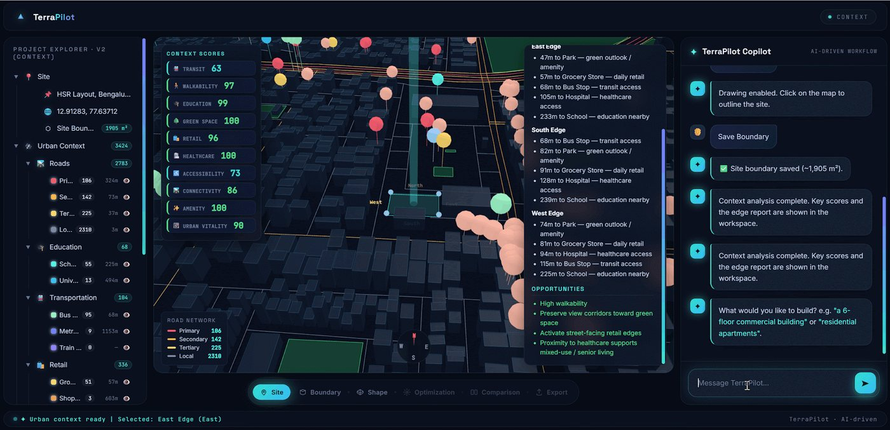
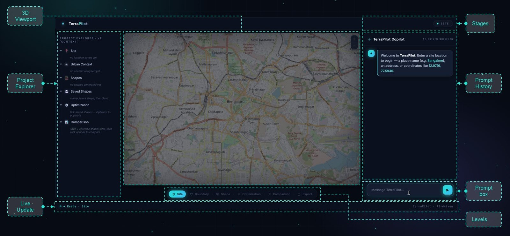
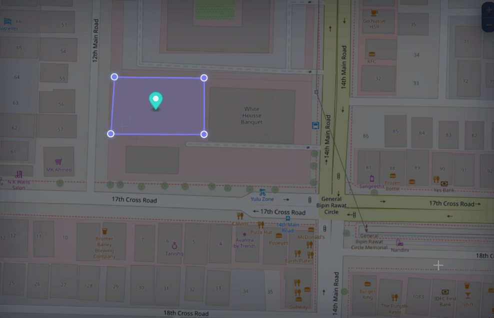
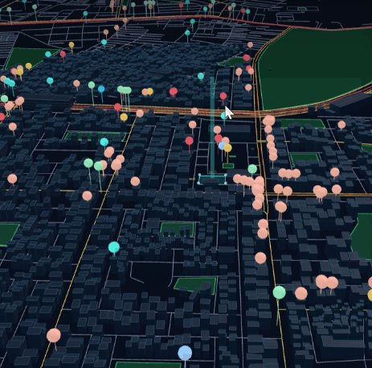
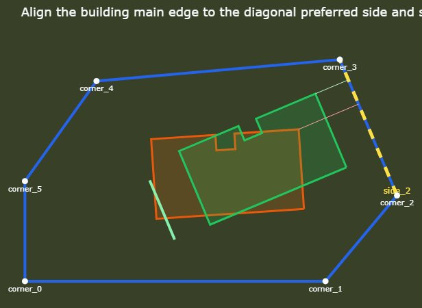
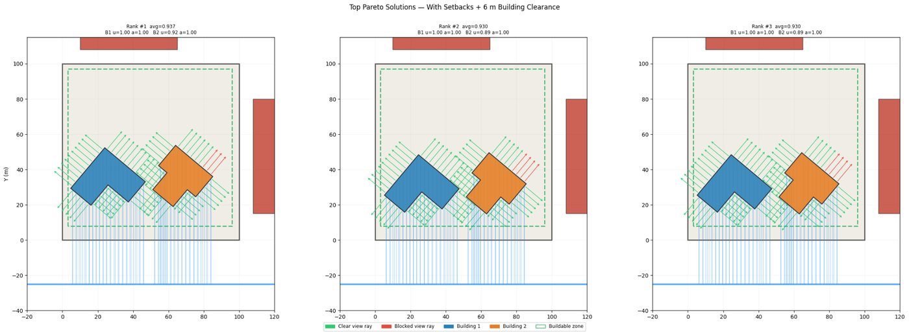
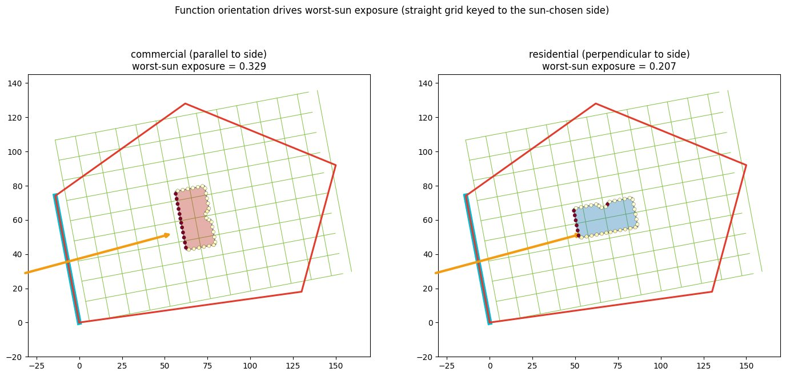
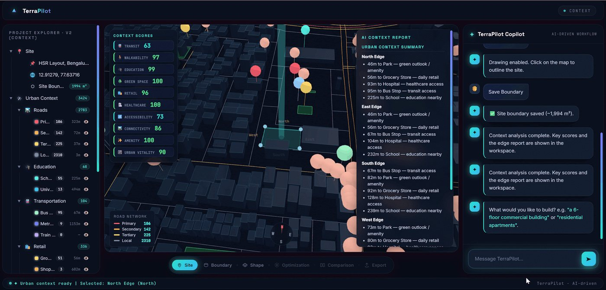

Terra Pilot
AIA Studio · Term 3TerraPilot is an AI design agent that works with your site, its sun, wind, roads and neighbours, turning plain-word intent into site-aware, editable and explainable massing.
▶ Watch the demo-
Explore in minutesdozens of options in a studio's time
-
Site-aware from minute onesun, wind, noise & roads in the loop
-
No software to learntalk to it in plain words
-
Decisions you can defendevery move shows its why + score
Team: David Agudelo · Daniel Shuai Zhang · Nihan Malkoç · Sushmitha Ravi · Tue Minh · Faculty: Joao Silva · Scott Lebow · Bao Q. Trinh
Old method → New method
Old method
- Days of modelling for a handful of options
- Context gathered and drawn by hand
- Trade-offs judged by feel
- Choices that are hard to defend
New method, with TerraPilot

- Dozens of scored options in minutes
- Site context loaded automatically
- Every option scored live
- Every decision explainable
The Dashboard

The Workflow · one guided flow
A single, guided journey from an empty plot to an exportable, site-fitted design.

Geocode, drop a pin, draw the plot.

Fetch roads, sun, wind & neighbours as layers.

Intent → ranked, site-fitted typologies.

Generate & rank variants by objective.

Trade-offs, side by side.

GeoJSON / Rhino / IFC for BIM.